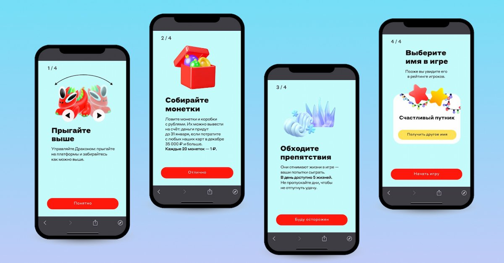
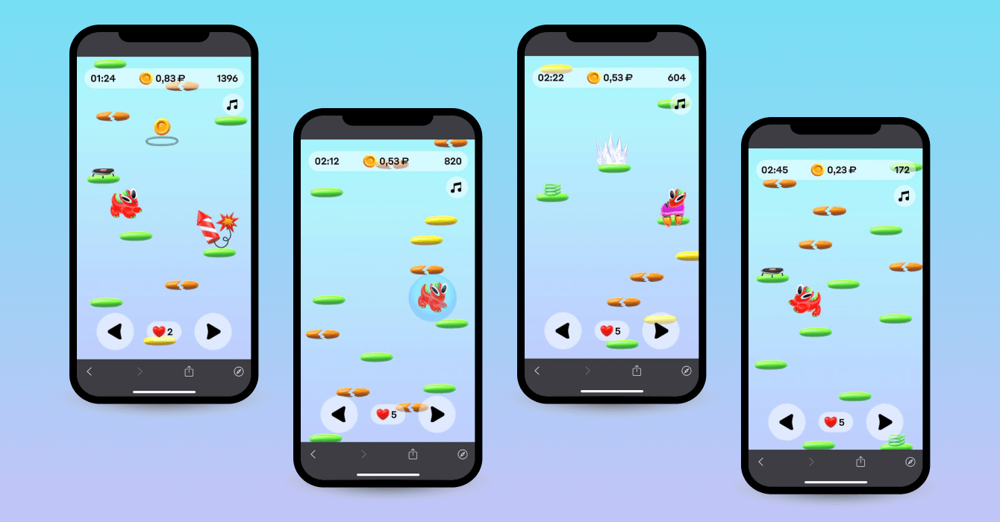

UX/UI Designer · Seven Winds Studio
Альфа-Банк · Дракон
Промоигра для банковского приложения

Задача
Поддержать регулярные возвращения в приложение банка и активность по картам через короткие игровые сессии.
Моя работа
Проработал ранние варианты персонажа, окружения и интерфейса: обучение, пробную игру, награды и рейтинг. Передал материалы команде банка для дальнейшей работы над финальной версией.
От знакомства к первой игре
Обучение объясняет управление, сбор монет и препятствия. На последнем шаге — выбор игрового имени и старт.

Игровой экран
Время, собранная сумма и оставшиеся попытки видны во время игры. Управление расположено внизу экрана, а бонусы и препятствия различаются по форме и цвету.

Результаты запуска
За первые 14 дней игры, по опубликованному кейсу Seven Winds Studio.
- Возвращений в игру в среднем
- 7
- Средняя игровая сессия
- 1,5 мин
- Игроков одновременно на пике
- 25 000
Ранние варианты персонажа и окружения
Один из этапов поиска: варианты персонажа, палитры, платформ и игрового окружения.